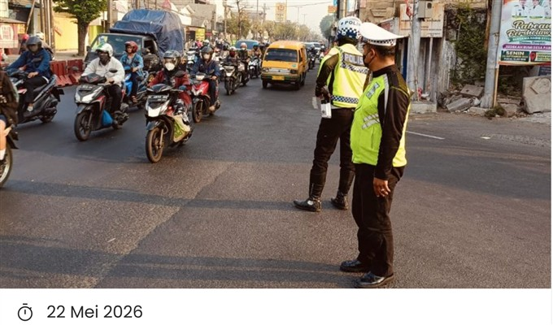
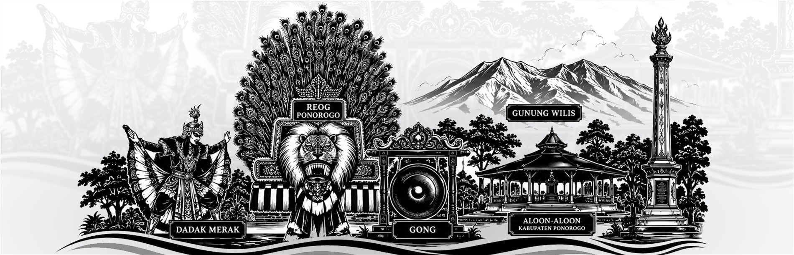
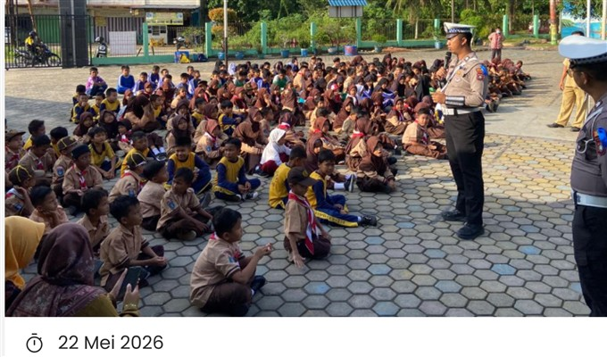
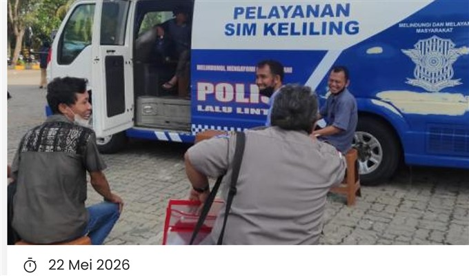
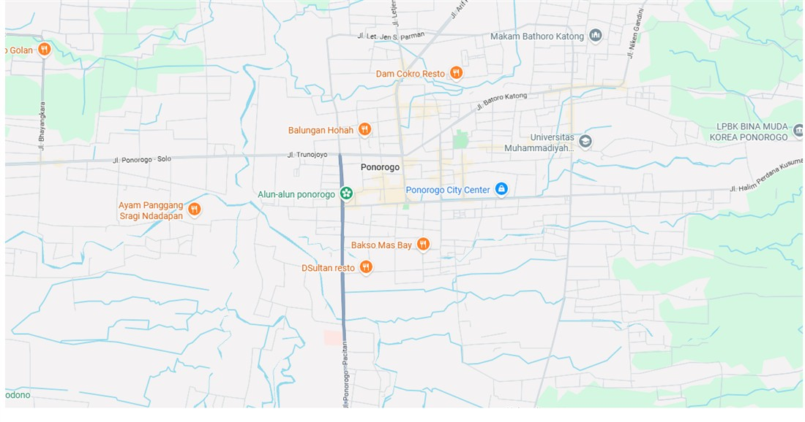
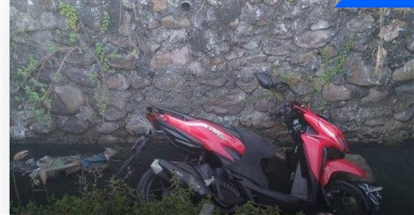
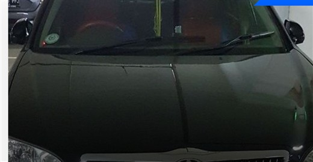
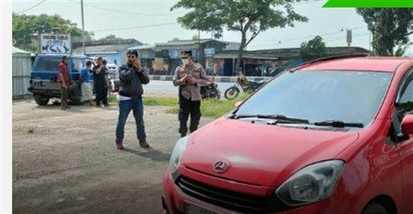
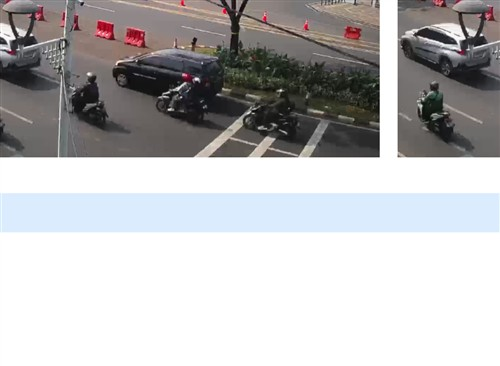

Satlantas Polres Ponorogo Gelar Patroli Rutin
Kegiatan patroli rutin untuk menjaga keamanan dan ketertiban lalu lintas.
SelengkapnyaSelamat Datang di
Polres Ponorogo
Layanan terintegrasi dengan profesional dan terpercaya untuk masyarakat.

Menu
Berita & Kegiatan
Hadir dengan informasi, edukasi, dan pelayanan untuk Masyarakat

Kegiatan patroli rutin untuk menjaga keamanan dan ketertiban lalu lintas.
Selengkapnya
Edukasi keselamatan berlalu lintas bersama masyarakat dan pelajar.
Selengkapnya
Pelayanan publik hadir lebih dekat untuk warga Ponorogo.
SelengkapnyaPetugas melakukan pengaturan arus lalu lintas pada jam ramai.
SelengkapnyaLayanan
Peta

Jl. Bhayangkara No. 60, Bangunsari, Kec. Ponorogo, Kabupaten Ponorogo.
Jl. Ir H Juanda, Ponorogo, Jawa Timur 63413.
Lokasi pelayanan menyesuaikan jadwal harian.
Pelayanan keliling wilayah Kabupaten Ponorogo.

W 503 GCHONDA - Roda Dua
W 503 DCTOYOTA - Roda Empat
W 501 DCHONDA - Roda EmpatJadwal Layanan
Jam layanan 08.00 - 12.00 WIB
Jam layanan 08.00 - 12.00 WIB
Informasi Lalu lintas
Arus kendaraan tetap terpantau. Pengguna jalan diimbau mematuhi rambu dan arahan petugas.
CCTV

Informasi
Silakan datang ke loket layanan dengan membawa dokumen yang diperlukan.
Bawa KTP, SIM lama, dan dokumen pendukung.
Bawa STNK, KTP, dan bukti kendaraan.
Laporkan kehilangan dan ikuti prosedur layanan.
Gunakan kanal layanan resmi Satlantas.